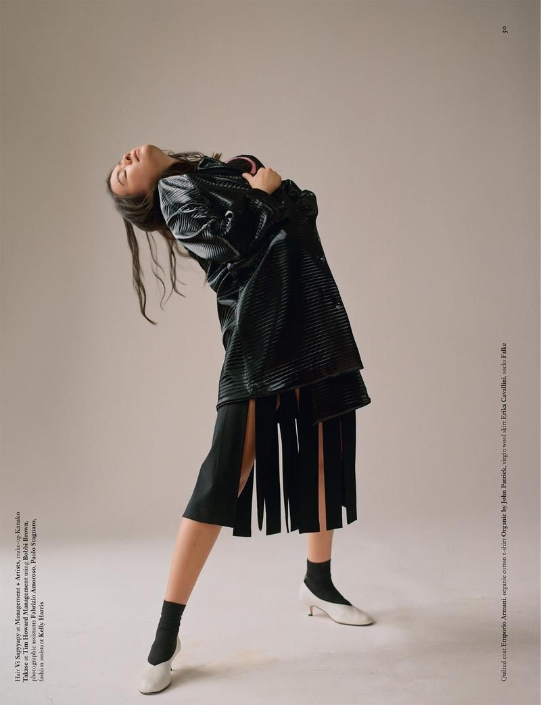
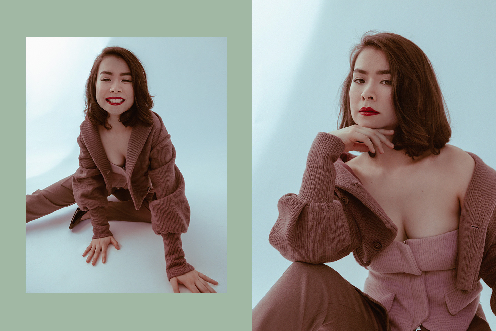
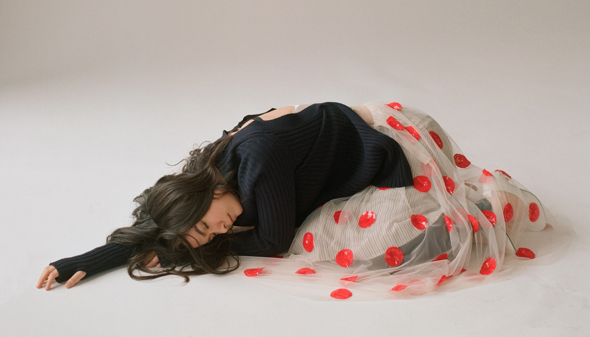
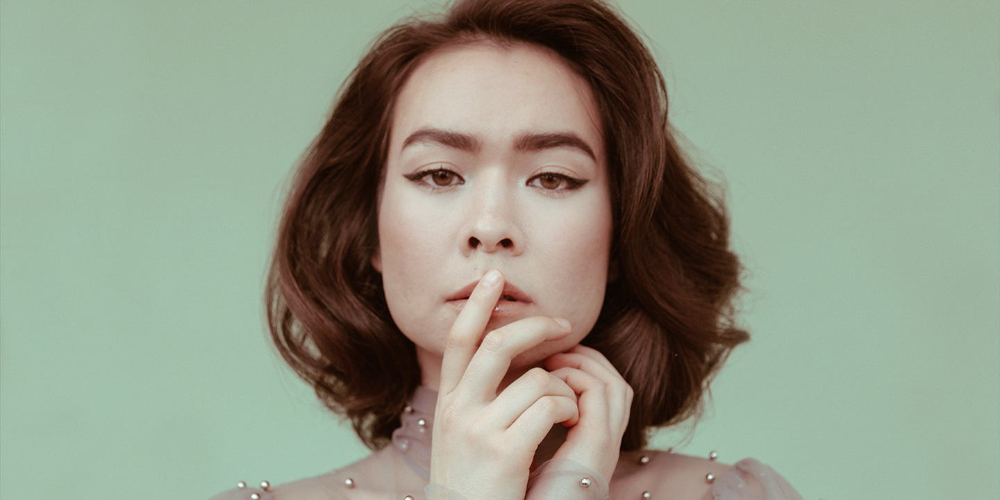

Mitski Miyawaki is playing her glorious songs of sadness to a huge arena, but hardly anyone is here to see her. After three songs, she introduces herself to the sparse crowd at Brooklyn’s Barclays Center. “My name’s Mitski,” she says. “It’s spelled out on two screens.” And it is, digitized in brown script on the small monitors that flank the stage like low budget cue cards. It’s early April, and she’s in the middle of a string of dates with Lorde, which means her job is to play as most people file in and find their seats. Floating above Mitski’s head is a fabrication of fellow openers Run the Jewels’ logo, a superhuman sized fist and a finger gun, which makes it look like she’s wandered onto the wrong stage and no one told her. My entire section is almost entirely barren, except for a man talking loudly about how he works at Apple Music.
After she plays a loud set with her band, they leave her for the last song, “My Body’s Made of Crushed Little Stars,” which Mitksi performs solo on electric guitar while a smoke machine’s exhaust encircles her. It’s a short outburst of a song about balancing ambition and reality that probably shouldn’t amount to much, but she thrashes through it in a way that’s both hard to watch and hard to look away from. “I wanna see the whole world,” she sings, “I don’t know how I’m gonna pay rent.” You can feel her vocal chords suffering.
“I better ace that interview/I should tell them that I’m not afraid to die.”
In the audience, moms and their tweens are watching this woman bash at her guitar and split herself open, her guts pouring out. “Please kill me” is the last line of the song, and after she sings it, she thanks crowd, dutifully shuts off her amp, picks up her water bottle, and leaves the stage with a small wave.
At 27, Mitski may still be young for the world, but as she approaches the release of her fifth album, Be the Cowboy, she’s going through something of a mid-career crisis—or at least a heavy spiritual reconsideration of what she wants and why. That’s largely because her singular pursuit—to be able to make a career of writing, recording, and performing music—has already come true, thanks to the devoted indie cult she’s cultivated over the past few years. “I can pay for my health insurance. I can eat. I can drink clean water. I can pay for a roof above my head. I’ve done it,” she tells me. “Now my goal is to only make music that I feel is necessary for me to make.”
When her record Bury Me at Makeout Creek was released in 2014, she was a largely unknown musician with two avant-classical-influenced singer-songwriter albums behind her. Makeout Creek abandoned her previous pomp and circumstance for a raw folk/rock hybrid sound with lyrics about isolation, desire, and boredom. It made being bummed sound fun.
2016’s Puberty 2 doubled down on the grit. Accented by distortion and drum machines, the album crystalized her songwriting as it ranged from pop-punk to indie to ballad to bubblegum. But each song contains its own universe, with Mitski as both its queen and sole resident, singing narratives of literal and metaphorical yearning. She’s a good singer, a little husky, a little saccharine, but it’s less the sound of her voice that’s so powerful than the tone of it. Loud or quiet, she exudes feeling, a gut-wrenching pleading with the world, asking for her little piece of it. When she sings “You’re the one, you’re all I ever wanted,” on her most popular song so far, “Your Best American Girl,” she does it with such conviction that you’ll rethink if anyone has in fact ever really wanted anyone else.
Be the Cowboy is a logical continuation of these albums’ themes, though it drops the drum machine and vocal fuzz for clarity of tone and hints of disco and showtunes. Misery is still front and center lyrically, but the musical outlook is a lot sunnier. “Nobody” is pure Studio 54, in a reach-for-the-stars way she’s never really done before. Even the more traditional indie songs feel pumped up. One of the album’s most intense moments, “Remember My Name,” deals with lofty dreams and their clash with reality:
“I need something bigger than the sky/Hold it in my arms and know it’s mine/Just how many stars will I need to hang around me/To finally call it heaven.”
It’s remarkable in its simultaneous display of hubristic aspiration and the vulnerability necessary to share it.
On the album’s cover is a big photo of Mitski’s head, wearing the kind of embellished cap synchronized swimmers wore in classic Busby Berkeley musicals. She’s looking directly at the camera, ready for her close up. But from the right, there’s a hand holding a pair of tweezers plucking at her eyelashes, showing how perfection is always an unattainable illusion. She echoes this sentiment in two of her music videos, where the final scene has the camera pulling back to reveal the set and its inherent charade.

“I was always bothered when people say, ‘I cry to your music, it sounds like a diary, it sounds so personal,’” Mitski says. “Yes, it is personal. But that’s so gendered. There’s no feeling of, ‘Oh, maybe she’s a songwriter and she wrote this as a piece of art.’” This time, Mitski says, fans looking for lovelorn depression anthems telegraphed straight from her heart may be let down. “Every time someone on social media is like, ‘I can’t wait to cry to your new album,’ I’m like, ‘I don’t know if you’ll cry. I’m sorry.’”
A few weeks after the Brooklyn show, Mitski’s back in New York and wants to visit the Metropolitan Museum of Art. She asks me which of its numerous exhibits I want to see, and I tell her we can go anywhere she wants, which, she says, is “the worst thing to say to a Libra.” Then, with an impressive mix of good humor, wisdom, and condescension, she asks, “What visual metaphor do you want for the story?” We go to the roof.
Up there is an exhibit by the Pakistani sculptor Huma Bhahba that includes an enormous human-like sculpture, and some teens are pretending to put their hand in its butt. Mitski, anonymous in all black, sits on a bench in the shade. Initially her tone is functional and dry, like someone struggling to stay polite to a customer service rep who is trying their patience. She doesn’t want to talk about where she lives, her family, or much else aside from her music. But she eventually warms up while discussing astrology, which she appears to use as a more comfortable way to indulge in conversation about herself. Though she’s an indecisive Libra, she says her “ascendent sign is Scorpio. Scorpios are very intense and dark with something mysterious about them. That’s how people see me at first.” According to Mitski, that toughness is a bit of costuming for her moon sign, which is Capricorn. “Capricorn is the goat that steadily climbs mountains,” she says. “I persevere. I’m very stubborn. I work hard. Am I making sense?”
After a cursory stroll through an exhibit of photographs by the Tennessee legend William Eggleston (“I don’t think he’s interested in taking pictures of Asian people”), Mitski checks her schedule on her phone, which she’s recently set to black and white to encourage her to look at it less. She has time to kill before business meetings in the afternoon, so we walk a few blocks to Bemelmans, an old-money bar and restaurant inside the Carlyle Hotel. It is named after Ludwig Bemelmans, author and illustrator of the Madeline children’s books series, and his drawings line the walls. Mitski is delighted by this. When the maitre’d says she’s in the wrong room for tea service, instead of walking the long way around to get out, she climbs over the banquette. She takes off her sweater and, seated beside an old man eating ice cream alone in the middle of the day, orders a pot of darjeeling.
Mitski Miyawaki grew up internationally, moving from country to country almost every year, as her parents’ careers demanded. She now lives outside of Philadelphia, though she’s almost never home. She went to college in New York, at both Hunter in Manhattan and SUNY Purchase upstate, and then lived in Brooklyn at the start of her career. Her rootlessness, and the solitude it engendered, is what allowed her to focus on music, at the expense of most everything else.
Even now, with some success and the luxury of deciding how to spend her time, and with whom, her dogged commitment to music remains resolute. As her tea steeps, she talks somewhat sadly, if resignedly, about her difficulty with interpersonal relationships. Moving around as a child, living in Turkey and the Democratic Republic of the Congo, among other places, she says, “I didn’t even make friends because I knew it would be goodbye in a year. Everyone else just thought I was different and weird.” She was an Japanese-American in neither of those places. “When people looked at me they couldn’t recognize any of the history of me, like, ‘Where is she from? What’s her ethnicity? Who is she?’ I just didn’t make sense to anybody.” Her love of playing music stems from that lack of ability to connect with others; a relationship with music became the only one worth pursuing.
“I’m revealing a big secret,” she says, “but a lot of my songs are just about music and trying to pursue it, and not feeling loved by it. A lot of the ‘yous’ in my songs are abstract ideas about music.” So when she sings
“you’re the one I want”
on Be the Cowboy opener “Geyser,” it’s not about romance. Or at least not the traditional kind. “I will neglect everything else, including me as a person, just to get to keep making music,” she tells me. “And even if it actually sometimes hurts, it doesn’t matter as long as I get to be a musician.”
Our conversation about sacrifice and commitment leads me to ask about her love life. “Being in romantic relationships is actually a really good learning opportunity for me,” she says, and then pauses. Instead of speaking specifically, she takes a more inward turn. “It’s learning how to bring someone into your life, which I have never done. I had a really hard time wrapping my head around the concept of a relationship, because all my life I had this thing where I’d start to befriend somebody, but then we’d get into an argument, and I’d just stop talking to them. In my world it was a waste of time to try to mend a relationship, because by the time I did I would go away anyway. So just maintaining relationships is so foreign to me, it took me a while to figure it out.”
We leave Bemelmans and take a cab downtown to her two back-to-back meetings with potential publishers, which she holds at two tables pushed together in the upstairs seating area of a bakery. Her manager joins her and does all the talking while Mitski sits in a ball, holding her legs to her chest. It’s not that the topic at hand is boring to her, it’s that the schmoozing is. But these meetings are a necessary evil that serve to get her paid for writing and performing music.
Ever practical about that goal, she’s currently diversifying the business of Mitski, and has begun writing songs for other musicians. Beyond the new album, she’ll head to L.A. as a songwriter for hire at the end of this year, and she’s already booked a week with the Canadian pop artist Allie X. “I’m just trying to plant as many seeds of investment as possible,” she says. “I’m also looking ahead 10 or 15 years from now, when I maybe don’t want to tour as much.”
The first meeting is with a Scottish guy who takes iced coffee orders for the table. While he’s getting those, his younger coworker asks if Mitski has seen the David Bowie exhibit at the Brooklyn Museum. When the Scottish guy comes back, he also asks Mitski if she has seen the David Bowie exhibit at the Brooklyn Museum. The next meeting is with just one guy, a silver-haired suitor in a Minor Threat shirt who talks for 40 minutes straight. When he finally asks Mitski what she thinks, she excuses herself and walks away.
On the last day of June, Mitski is set to perform a show in sleepy, hippie Woodstock, New York, part of a tour of smallish towns across the country that she’s playing solo, on acoustic guitar. She picked the towns herself, then had her booking agent make it happen. She’s calling the tour a vacation. Tonight’s venue, Colony, is an old white building just off the main drag, with a front porch and a small stage in the middle of the room instead of the back, so people are standing in just a few long, thin rows. The show has been sold out for months, and the few hundred people there are eager and very, very quiet. Just before Mitski goes on, a man comes on the PA and says the blue van in the parking lot across the street must be moved right away.
Mitski ventures to play a few new songs, asking the audience not to leak videos of them: “Promise you won’t put them on the internet. The temptation will be very strong when you go home. But you have to imagine my broken heart before you press upload.” The crowd hoots in support, but a woman with a large dragonfly tattoo on her back streams the show on Instagram Live anyway.
The crowd sings along to all the old songs, and it seems like Mitski is leading a rehearsal as much as performing a concert; the vibe is somewhere between Christmas caroling and karaoke among friends. A woman on the stairs leading to the balcony takes it upon herself to conduct the crowd with her hands. The deep feelings are apparently mutual, and two thirds of the way through the concert, between songs, Mitski begins to cry. “This is my favorite thing to do. Thank you so much for making my dreams come true.” She pauses for a minute, then continues. “You all saved my life, thank you very much.”